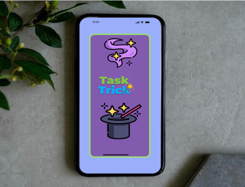

About: TaskTrick is an app designed to help parents and kids complete chores as a family to help build a sense of responsibility in a fun and engaging way.
Responsibility: Group project. I helped with ideation, design, user flow, user testing, wireframes, and prototypes.
Timeline: 3-4 weeks
Tools: